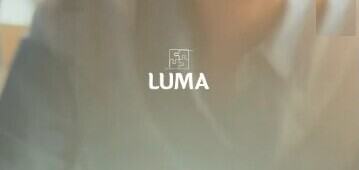

Un rompecabezas que encaja
El logo se reproduce solo en los colores de la paleta. Si no están disponibles, en escala de grises.
Cuatro piezas de rompecabezas en un trazo continuo: las partes que encajan.
"LUMA" en una letra redondeada de trazo grueso.
"Centro Psicopedagógico Integral", en mayúsculas.
Versiones
La principal es gris oliva sobre fondo claro. Sobre gris oliva, salvia o foto con velo, el logo va en blanco.


Área segura
La grilla del manual toma como módulo x el grosor del asta de la "U". Alrededor del logo queda libre un margen de 2x por lado: sin texto, sin bordes de slide, sin otros elementos.
Referencia práctica: 2x equivale a un 11% del ancho del logo.
✓Siempre
- En los colores de la paleta o en escala de grises.
- Con sus proporciones originales y su área segura.
- Sobre fondos lisos o fotos con velo que aseguren lectura.
✕Nunca
- Recolorear fuera de la paleta, ni sumar sombras o contornos.
- Deformar, rotar o separar el isotipo de la bajada.
- Apoyarlo sobre zonas de foto con mucho detalle.
El encabezado del manual dice "LUMA CENTRO PEDAGÓGICO". El nombre correcto es LUMA Centro Psicopedagógico Integral, como figura en el propio logo. Conviene pedirle a la agencia que lo actualice.